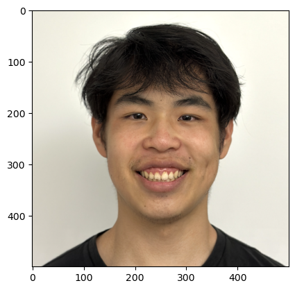
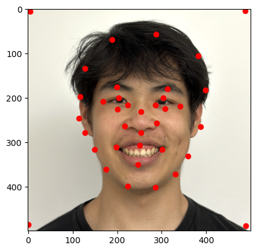
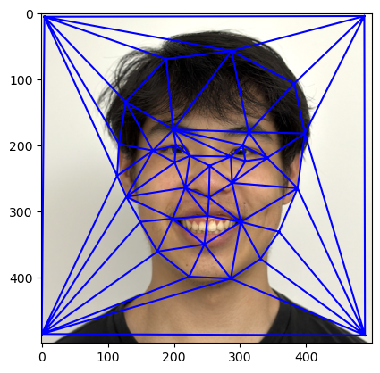
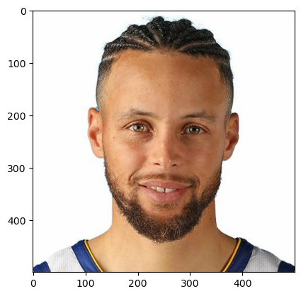
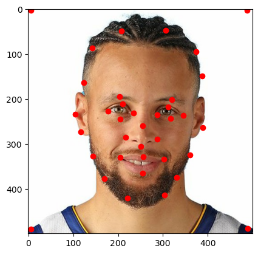
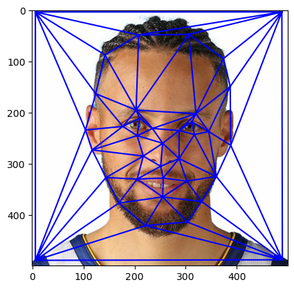
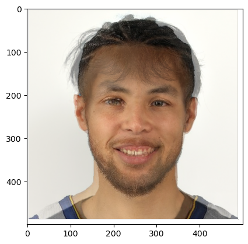
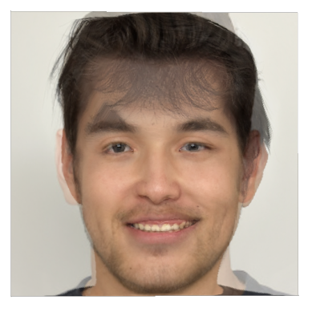

CS 180: Intro to Computer Vision and Computational Photography, Fall 2024
Ian Dong
Overview
This project explores how to create a face morph animation by warping the two images into a "mid-way" face. I used
Delaunay triangulation to find the most optimal triangles to warp the images. Finally, I then used the affine
transformation to warp the images and blend them together to create caricatures and mean face of a population.
Section I: Defining Correspondences
Defining Correspondences
First, I used the labelling tool provided by last year's students to define the pairs of corresponding points
that mapped both images' eyes, mouths, noses, and face structure. I had also added corner points for both images
to help with the warping process. After I got the points, I passed them into Delaunay to find the optimal triangles. Finally, I overlayed the points and the triangles over the original images. Here are the images with the corresponding points and triangulations:
|

Ian (Original)
|

Ian Correspondences
|

Ian Triangularized
|
|

Steph (Original)
|

Steph Correspondences
|

Steph Triangularized
|
Section II: Computing the "Mid-way" Face
Affine Warping
Once I had the triangles for the correspondences, I first averaged them to get the "mid-way" points. I then used the equations to inverse warp from the "mid-way" points back to the original images' points. During this process, I calculated the affine transformation matrix so that I could fill in the "mid-way" face with the points from the original images. I had also incorporated warp_frac to interpolate the location of the points between the images and dissolve_frac to interpolate the resulting colors between the two original images. Here are the original images and the "mid-way" face:
|
Ian (Original)
|
Steph (Original)
|

Ian Steph "Midway" Face
|
Section III: The Morph Sequence
The Morph Sequence
After morphing my face with Steph Curry's, I decided to vary the warp_frac and dissolve_frac to create a morph sequence. These two parameters controlled how much warping and cross dissolving between the two images and ranged from 0 to 1. I had also created a video of the morph sequence to show the gradual change between the two faces. For the video, I created 55 equally spaced frames, used an fps of 20, and also reversed it to show Steph Curry morphing into my face as well. Here is the video:
 Ian Steph Morph Sequence
Ian Steph Morph Sequence
|
Section IV: The Mean Face of a Population
The Mean Face
After morphing my face with Steph Curry's, I decided to vary the warp_frac and dissolve_frac to create a morph sequence. These two parameters controlled how much warping and cross dissolving between the two images and ranged from 0 to 1. I had also created a video of the morph sequence to show the gradual change between the two faces. For the video, I created 55 equally spaced frames, used an fps of 20, and also reversed it to show Steph Curry morphing into my face as well. Here is the video:
|
Ian Steph Morph Sequence
|
Section VI: Bells and Whistles
Morphing to White Guy
For my bells and whistles, I decided to morph my face with an average white guy's face that I had found online. To get just the shape of the other white guy, I used a warp_frac of 0 and a dissolve_frac of 0.6. Then, to get just the color, I used a warp_frac of 1 and a dissolve_frac of 0.2. Finally, I used a warp_frac of 0.5 and a dissolve_frac of 0.5 to get both a mix of the shape and color. Here are the images:
|
Ian (Original)
|
Average White Guy (Original)
|
|

White Guy Shape
|
White Guy Color
|
White Guy Shape and Color
|